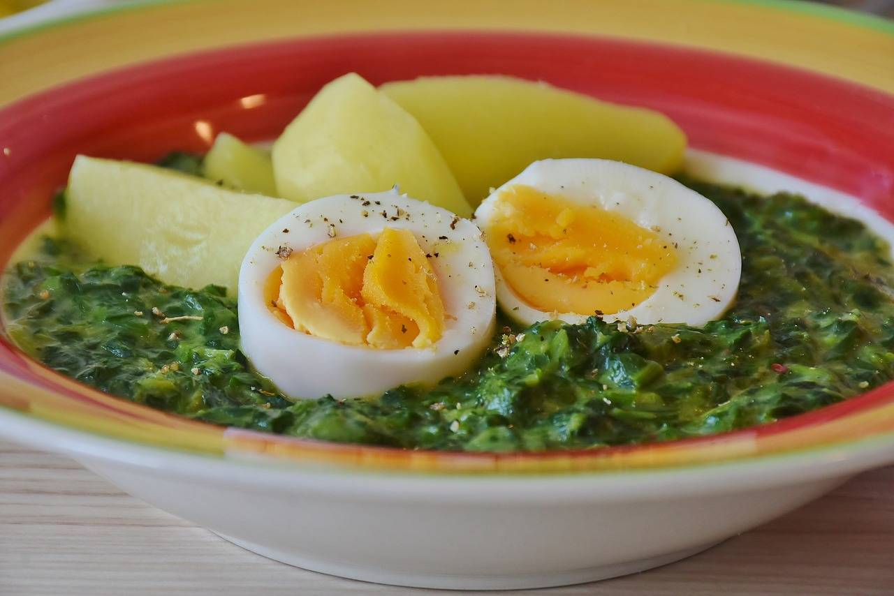

Klasický český špenát s česnekem, vejci a bramborami – jednoduchý a výživný pokrm.
Špenát uvaříme a přidáme hrnek vody. Přivedeme k varu.
Přidáme jíšku a necháme chvíli provařit. Poté dochutíme solí a pepřem.
Rozšleháme vejce s trochou mléka a přidáme do špenátu. Krátce povaříme.
Přidáme prolisovaný česnek a promícháme.
Podáváme s vařenými brambory a vejci natvrdo.